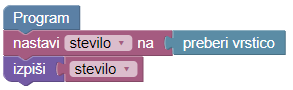
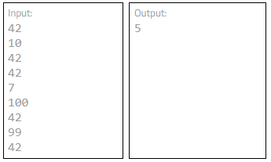

Kot verjetno veš (če pa še ne, si preberi knjigo Douglas Adamsa Štoparski vodnik po galaksiji) je število 42 zelo pomembno.
Deset prijateljev si vprašal po naključnem številu med 1 in 100. Njihovi odgovori so zapisani v seznamu (Input). Na delovni površini je že napisan program, ki prebere naslednje število iz seznama in ga izpiše. Ti pa ga spremeni v program, ki bo izpisal, koliko tvojih prijateljev je odgovorilo z odgovorom 42
Na delovni površini je napisan program, ki prebere naslednje število in ga izpiše. 
Trenutni program glede na dane podatke (Test 1) izpiše število 2, moral pa bi izpisati število 5. Za podatke pri Testu 3 izpiše število 42, moral pa bi izpisati število 10.
